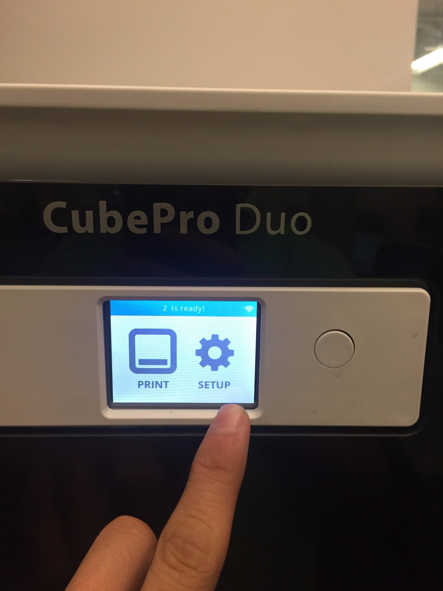

Checking the Cartridge
The screen you see above is the home screen. Before printing can begin the setup icon must be selected.
Once setup has been chosen the user should select cartridge status to check what plastic is in the cartridge and how much is left.

The cartridge status here shows that ABS plastic is being used with 5% remaining. Once it is determined that there is sufficient material press the check button to return to the previous screen.

Now that the cartridge is set up select the arrow to the right for the next step.

Click here for the next step.